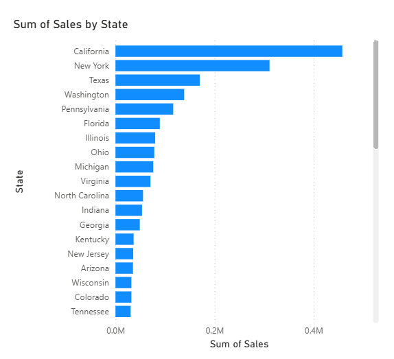
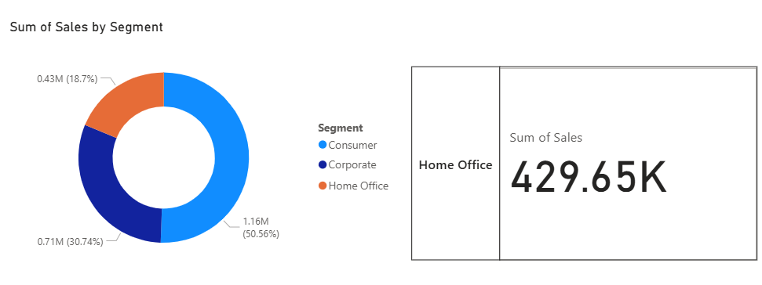
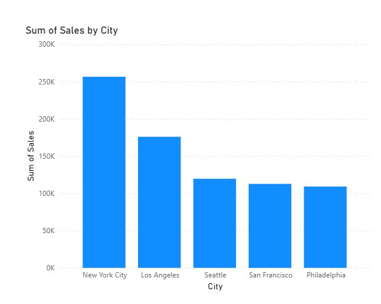

01Data Analytics
Power BI 数据分析
将业务数据转化为交互式可视化结果，突出指标比较、趋势识别与业务洞察。用于证明数据分析与可视化表达能力。



Master of Commerce 背景，聚焦 Information Systems 与 Applied Finance。项目覆盖数据可视化、业务流程与系统设计、商业分析、数据库、数字化转型和金融分析，形成“业务 + 数据 + 系统 + 金融”的复合能力结构。
将业务数据转化为交互式可视化结果，突出指标比较、趋势识别与业务洞察。用于证明数据分析与可视化表达能力。



围绕 Users、Persons、Families、Rooms、Bookings、Waitlist 与 SignLogs 设计数据关系和业务流程，实现预约、候补审批、签到签退与角色权限等核心功能。
面向国际学生适应与留存场景设计数字化解决方案，覆盖用户痛点、价值主张、商业模式、收入测算、产品规划与规模化路径。


围绕酒店业务流程进行 AS-IS 流程建模，并结合 ER Diagram 与 MySQL 数据库设计，将业务流程分析与信息系统设计相结合。
使用 Excel 对财务报表进行比率分析和横向比较，将 Applied Finance 知识与数据处理能力结合，用于评估企业经营与财务表现。
分析电子处方的业务影响与技术采纳因素，并使用 TAM 等框架解释数字技术成功落地的原因，体现数字化转型与商业分析能力。


本作品集用于校招展示，重点呈现项目方法、工具与个人能力。为保护隐私，原始课程材料中的学号、电话等信息未公开。完整项目材料可在面试或需要时进一步提供。